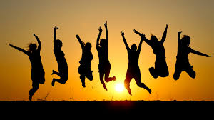
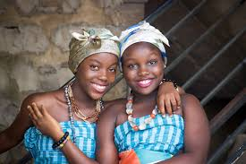

Visualisation of the current experiences
We all face different challenges everyday,In Man’s search for meaning,Viktor Frankl gives us hope by all the challenges he faced and overcame.Through love,work and courage.In the real life today there are obstacles that come along.We can visualise in different ways.The first example is the corona challenge,people are so much,we don’t know what to do,our daily lives are complicated.We can overcome this if we love and help each other and this will help us to create a peaceful environment.
We can clarify what we want in life,this will force us to get serious about life ,it will lead us and will help us to overcome and go through the challenges
The second way is to remove uncertainty,this will help get rid of the fears we have.In such a time we are worried and we have questions if we are going to overcome all these.We are afraid of visiting each other and travelling.This can sabotage our best efforts and prevent us from moving on.We can become familiar with such a situation by having meetings through zoom and having different and encouraging conversation with our friends and families.
Another way is having the right emotions,Positive energy and minds will help us overcome all this.Thinking of the bright future and not giving up on life.Spreading love and being grateful everyday will surely count and will help us to move.
Youths Navigation
Young people can engage in positive and active events when they are at home.The first activity is helping the parents and guardians in activities like cleaning,farming and kitchen activities.This will keep them busy busy and not engage in negative habits.The second activity,they can attend online webinars,they will engage with their mentors and learn a lot,this will also help them in networking with new and familiar people.The third activity they can organise study groups where they can cover most of the content they learnt in school.Finally they can form meetups groups and help them check on each other,keep up with the current news and spread love and care.

Structures we have inherited from colonial and western culture
Retrogressive
1.Patriarchal supremacy-We have inherited patriarchy systems from the colonial and western culture,in our daily lives men rule and women have no right to rule,they are not allowed to take part in society leadership and taking part in decision making.This is making the importance and the rights of women in the society depleted
2.discrimination-We have inherited dicrimination from the colonial system,we dont value each other and sometimes we aren’t willing to help each other and this leads to lack of unity and peace.
Progressive
1.Medicine-we have inherited the trait of going to hospitals when we are sick rather than taking herbs and just staying at home.This has led to reduction of deaths in the society.
2.Christianty-We have inherited the fact that we believe in God rather than believing in witchdoctors and moons.This has led to increase in people who believe in God and spreading peace.
